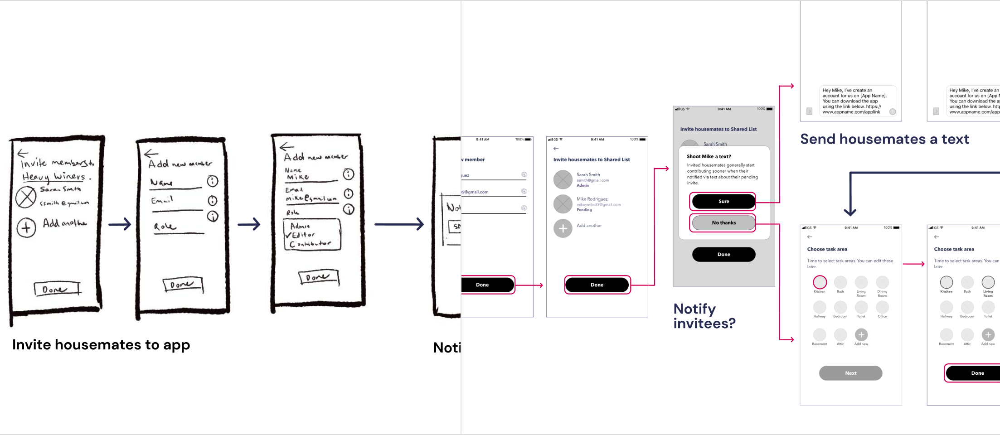
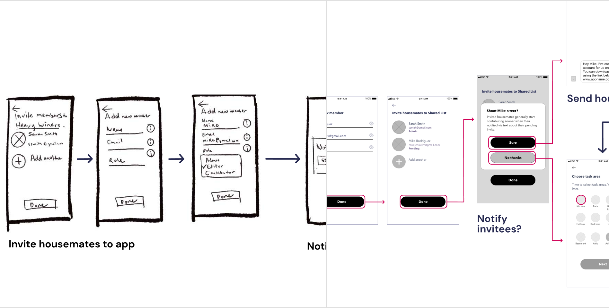
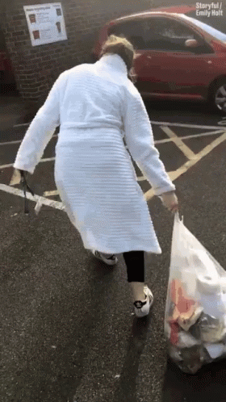

HomeMakers  |  UI • UX • Mobile App
Improving Shared Living Experiences, One Chore at a Time
HomeMakers  |  UI • UX • Mobile App
Improving Shared Living Experiences, One Chore at a Time


Overview
view project
Overview
HomeMakers is a collaborative tool that simplifies managing communal tasks. The mobile app aims to improve communication among housemates with respect to chores. As sole designer, I led the ideation, user research, and UX design for this app, which is currently in development. 
Time: 2019
Duration:  6 - 8 weeks
Tools:  Sketch, Figma, Maze, Invision
Duration:  6 - 8 weeks
Tools:  Sketch, Figma, Maze, Invision
problem meet solution
problem meet solution
problem meet solution
problem meet solution
problem meet solution
problem meet solution

Problem: Shared adult households can find it tricky to efficiently manage household responsibilities
Living with roommates can be great—lower rent, built-in social time, someone to split the cost of that new microwave with—and an increasing number of adults are choosing to share their home with people other than family members. However, as most of us know, this arrangement also has its challenges. Have you ever walked into a room you just swept, only to find new crumbs on the floor? Then you know exactly what we’re talking about.
view project
Solution: A collaborative task management app—for adults
While some chore management apps exist, they’re targeted toward parents with children, not adults in a shared household.
That’s where HomeMakers comes in; the app keeps everyone on the same page and works more effectively than any whiteboard or chore sheet stuck to the fridge.
With the HomeMakers app, housemates can easily see what others are doing to ensure that common areas are clean and are alerted when it’s their turn to contribute.
That’s where HomeMakers comes in; the app keeps everyone on the same page and works more effectively than any whiteboard or chore sheet stuck to the fridge.
With the HomeMakers app, housemates can easily see what others are doing to ensure that common areas are clean and are alerted when it’s their turn to contribute.
discover & research
discover & research
discover & research
discover & research
discover & research
discover & research
Identifying the People Problem
Because I’m a part of the HomeMakers target market, I wanted to collect data from a diverse group of people so that I could ensure I was solving the most common challenges, and not just my own. Using a blend of qualitative and quantitative data, I set out to validate whether or not the market existed for this product— and what challenges that market wanted addressed.
view project
Competitive Analysis
In addition to the overall user and competitive research, I took a look at other cleaning apps' UI patterns and app reviews. More specifically, I focused on Tody, Wunderlist, and OurHome. I wanted a broad range to pull inspiration from and gain insight into what key differentiators a new product would need to compete with existing applications.
view project

Tody
- Costs $6.99
- No set area to communicate with other users in-app
- Onboarding unclear on how to invite housemates
Tody
- Costs $6.99
- No set area to communicate with other users in-app
- Onboarding unclear on how to invite housemates
OurHome
- Marketed towards families
- Lack of focus on solely household tasks
- Rewards feature available as motivation
How are people solving this problem now?
Wunderlist
- Doesn’t keep To Do List organized by date on its own
- Lacks more customizable to-do list date and reminder time
User Research
I read over 200 reviews on the competitors’ apps, which was a great starting point. Using my findings from the competitive analysis as a compass, I drafted questions to ask users that would uncover design direction HomeMakers needed. I then distributed two batches of the same survey to 117 potential customers to learn about their behavior, pain points, and motivation they might have to use a task-management app. 
Data from over 100 respondents gave me a solid understanding as to who would find value—but I also needed to hear directly from potential users to validate if my conclusions were correct. I reviewed the results and homed in (pun intended) on different themes I wanted to further explore with qualitative data. Next, I conducted 8 guerrilla user interviews over a two-day span.
view project

52%
of people said they’re frustrated doing more to keep common spaces clean than their roommates.
44%
of people said their cleaning schedule is not frequent enough.
33%
of people said it's challenging for their housemates to remember when it's their turn to do communal tasks.
If a product that helped with chore management existed, are there any features you’d request?
“For it to be communal and alert everyone at home when it's their turn to do a chore.”
“I'd want to be able to see who was supposed to do what and when, and if they did it. ”
“Show when a particular task was last completed. For example, make it easy to see how long since the bathroom was cleaned.”
“A sync feature across all roommates’ devices so that everyone can see the entire list of chores that needs to be done, and to see if someone has already done/check marked it off”
“I'd want users in a given group/household to be able to assign things to people, OR be able to program a rotation so that it would automatically switch up who does what each month or week, etc.“
The findings from my research gave me insight into the current system housemates use for chore management, the type of frustrations and limitations targeted users currently faced, and dispelled assumptions of what features potential users would find valuable.
Key Insights üí°
A difference in perception.
An interesting fact I uncovered while interviewing people was that they tended to rate themselves higher at contributing to chores than their housemates. However, when asked how they thought their housemate(s) would rate them, they provided lower ratings. I realized it was important to indicate who does what since the people most likely to seek out the app are under the impression that their counterparts don’t believe or are unaware how much they do around the house.
An interesting fact I uncovered while interviewing people was that they tended to rate themselves higher at contributing to chores than their housemates. However, when asked how they thought their housemate(s) would rate them, they provided lower ratings. I realized it was important to indicate who does what since the people most likely to seek out the app are under the impression that their counterparts don’t believe or are unaware how much they do around the house.
Rewards =/= motivation.
I also learned that rewards aren’t compelling motivators and that I needed to narrow down the target age of users from 18-35 to 23-35 and focus on users whose roommate whose sole remote was not their partner. 
I also learned that rewards aren’t compelling motivators and that I needed to narrow down the target age of users from 18-35 to 23-35 and focus on users whose roommate whose sole remote was not their partner. 
Target Users
After processing and sifting through my user research and responses, there were obvious similarities among potential customers. By giving real-life stories, faces, and names to these target users, I could refer to them and ask myself questions like, What would Jake think of this design decision? How would this addition serve Melissa’s needs? Asking questions like this, and holding my target users in my mind, was key to reaching the MLP (Minimum Lovable Product).
view project

JAKE
MELISSA
STEVE
Jake, The Frustrated Cleaner
“I’ve been the only person doing any sort of cleaning around the house”
Key Callouts
- Frustrated with pitching in more than roommates to keep things clean
- Would prefer take on more of a facilitator role but not be the sole person involved setting up chores
- Needs a communal solution where housemates can mark tasks as complete
- Wants everyone to be able to view and track task completion
define & analyze
define & analyze
define & analyze
define & analyze
define & analyze
define & analyze
Refining the Problem Statement
I’ve always been a firm believer that framing a design problem is the one of the most integral steps in a human-centered design process. While I had a rough idea at the start, I asked myself these questions and used them as a guide to define the problem statement.
view project
What people problem am I trying to solve?
- Who: people within the ages of 22 and 29
- Biggest frustration: lack of equal participation in cleaning
- Other frustrations: frequency and reminders
How will I know this is a real problem?
- 70% of survey respondents expressed dissatisfaction with their chore system
- 84% expressed interest in a product that would help them manage chores
- Existing solutions such as Tody ($6.99, 10K reviews) and other popular chore apps
How are people solving this problem now?
How are people solving this problem now?
- Whiteboards
- Notes
- Reminders
- General to-do apps like Todoist and Wunderlist (now discontinued)
- Chore-specific apps like Tody
I used the information I’d gathered from both quantitative and qualitative research to craft a more targeted problem statement and translated it into the following “How might we…” (HMW) question, which I used to think through various tactical approaches to solving the challenge:
How might we improve communication among housemates with respect to chores?
User Flows & User Stories
In order to prioritize the most important actions different users would expect to take on, I created user stories and then built user flows to create visual representations of the path the user can follow to achieve different goals.
view project

Sample user story
design & prototype
design & prototype
design & prototype
design & prototype
design & prototype
design & prototype
Establishing the Design Direction
After analyzing competitor research, user surveys, and interviews, I established the foundational, underlying goals for the app and then began the design process. 
For the MVP, I created sketches and wireframes that include high-priority user flows. It was important to ensure that the onboarding process and subsequent steps were intuitive for users and required minimal time to complete. I tasked five testers with completing the onboarding flow, setting up a chore schedule, and removing a housemate that was leaving.
view project



Sketches of the onboarding process translated into wireframes
testing
testing
testing
testing
testing
testing
testing
testing
testing
testing
testing
testing
Testing Wireframes & Prototypes
I began conducting wireframes testing to gain context as to what changes to design and flow were needed; the six in-person tests I completed gave me early feedback on the onboarding process, usability, and overall interface.
While wireframe testing gave me input on the user interface, testing the prototype gave me feedback on the user experience. For example, when testers went through the process of creating a chore, I uncovered that people had a hard time understanding the different chore schedules and that the number of steps required for chore set up felt long. 
view project
Heatmaps from remote prototype tests
Addressing Feedback
Based on that early user input, I was able to address parts of the experience that were not intuitive before prototyping.
view project
Improving user understanding of unfamiliar concepts
Users expected to see a calendar pop up when they clicked on “Due date” because the phrase connotes a specific date in a month versus a day. I tweaked the phrase to Schedule instead to better align with user expectations.


Consolidating Steps
Since each step of the process for adding a new task was separate, some testers felt the flow was a bit long. To make the process feel more cohesive and less time-consuming, I rolled each step into one flow and provided a progress bar.
Consolidating Steps
Since each step of the process for adding a new task was separate, some testers felt the flow was a bit long. To make the process feel more cohesive and less time-consuming, I rolled each step into one flow and provided a progress bar.

Aligning with user expectations
Users struggled to understand the value of having a private list in the app to track their own tasks. This was due to the app's core value being a communal place to track chores. I removed the private list option, which meant users no longer had to name their shared list during the onboarding flow.

User Delight with Visual Design
While implementing changes based on the usability feedback, I also explored different visual design iterations I could make to create a cleaner UI, better communicate information, and infuse an element of delight using illustration. 
view project
Improving branding with type
I opted for a friendlier, more approachable font. The goal in the typography change was to get folx in a more positive headspace when it came to tackling chores.
Harmonizing color
While the app reflected a vibrant color palette, the combination of colors did not mesh well with one another. I simplified the palette and opted for two primary colors (orange and blue) so that the UI would feel cleaner to users and less busy.

Adding delight with symbols
I removed the illustrations from the top section (task areas) and added them to the tasks themselves to add some humor and playfulness to the app around task completion.
final product
final product
final product
final product
final product
final product
final product
final product
Refined Key Features After Testing
After addressing usability challenges, polishing the app's aesthetics, and incorporating delight in the design, I went through one final phase of testing. 86% of the new testers were able to complete the 4 out of 5 tasks in an average of 37 seconds less time. I also added multivariate testing into the mix to see how the visual changes tracked with users; feedback on the newest design was positive, with users commenting on the clean interface and playful illustrations.
view project
Productivity Center
Users can access tasks they've been assigned (along with tasks open for anyone to do). From this screen housemates can:
Users can access tasks they've been assigned (along with tasks open for anyone to do). From this screen housemates can:
- Track their contribution over time
- Track their housemates' contribution
- View streak for completing tasks
- Gain motivation to continue contributing

Task customization
Users can create and access task schedules, configure reminders, and view the history of changes and updates for tasks.
Users can access tasks they've been assigned (along with tasks open for anyone to do). From this screen housemates can:
- Assign a task to a housemates
- Set chore schedule
- Edit task with notes
- View the history of a task
Easy communication
Users can leave comments on specific tasks and respond to tasks completed by other housemates. From this screen housemates can:
Users can access tasks they've been assigned (along with tasks open for anyone to do). From this screen housemates can:
- Communicate about tasks
- Show and receive appreciation for task completion
- Stay updated around what’s been done around the household
Productivity Center
Users can access tasks they've been assigned (along with tasks open for anyone to do). From this screen housemates can:
- Track their contribution over time
- Track their housemates' contribution
- View streak for completing tasks
- Gain motivation to continue contributing
reflection
reflection
reflection
reflection
reflection
reflection
reflection
reflection
reflection
reflection

Oops & Oh My’s: Lessons Learned
Conduct casual user interviews before surveys and formal user interviews. My survey questions were targeted and relevant based on my competitive analysis, but when I conducted user interviews, I realized I needed to shrink the target group. I could have better targeted this group during my survey had I received those insights from user interviews earlier. 
Balance feedback with time constraints. Throughout the process, I learned a lot about what people expect from their task management apps. I received various suggestions during user research and testing for new features and ways to take the app to the next level. Naturally, I wanted to implement all of them; however, I quickly learned how to soak in feedback and prioritize my energy and focus to work within time constraints.
view project
read more
read more
read more
read more
read more
read more
read more
read more
read more
read more
PagerDuty
UI · UX · Mobile App
A web app feature to help engineers triage and resolve active incidents faster.
 view project
view project
spaceKit
UI · UX · Web App
A cloud storage application with build-in organizing support.
 view project
view project